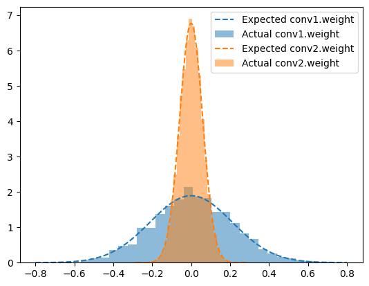
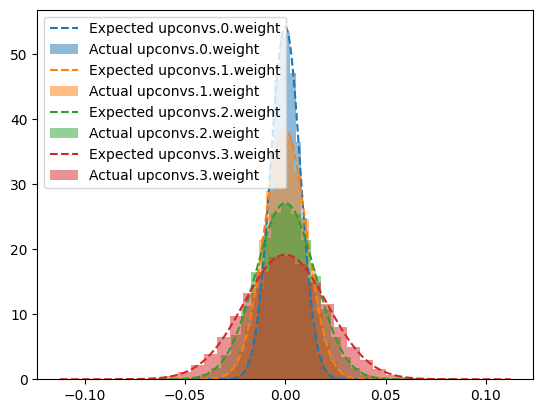
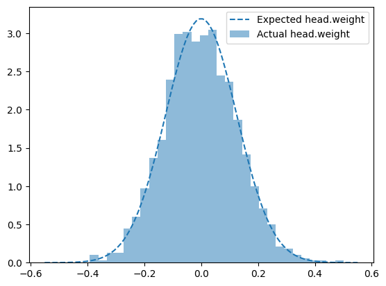

flowchart LR
A(("
Input
(bs, in_c, h, w)")) --> B["
Conv(3x3)
in_c -> out_c"]
B --> C["BatchNorm2d"]
C --> D["ReLU"]
D --> E["
Conv(3x3)
out_c -> out_c"]
E --> F["BatchNorm2d"]
F --> G["ReLU"]
G --> H(("
Output
(bs, out_c, h, w)"))
biasutti2019riu
Module that implements the model from RIU-Net: Embarrassingly simple semantic segmentation of 3D LiDAR point cloud.
RIUNet architecture
Block
Block (in_channels, out_channels)
Convolutional block repeatedly used in the RIU-Net encoder and decoder.
It implements the following architecture:
Here is an example on how to use it:
bs, in_c, out_c, h, w = 1, 5, 64, 64, 512
inp = torch.randn(bs, in_c, h, w)
b = Block(in_c, out_c)
outp = b(inp)
assert outp.shape == (bs, out_c, h, w)
print(outp.shape, f'== ({bs}, {out_c}, {h}, {w})')torch.Size([1, 64, 64, 512]) == (1, 64, 64, 512)It initializes the weights from the conv layers following the kaiming_normal_ algorithm in fan_in mode.
from matplotlib import pyplot as plt
import matplotlib.colors as mcolorscolors_list = list(mcolors.TABLEAU_COLORS)
def plot_param_dists(net, param_re_pattern, nonlinearity_gain):
color_idx = 0
for n, p in net.named_parameters():
if re.search(param_re_pattern, n):
x_range = 1.1*p.data.max()
## kaiming normal dist
fan_in = p.shape[1]*p.shape[2]*p.shape[3]
mu, sigma = 0., np.sqrt(nonlinearity_gain/fan_in)
x = np.linspace(-x_range, x_range, 100)
y = ((1./(np.sqrt(2*np.pi)*sigma))*np.exp(-0.5*((1./sigma)*(x - mu))**2))
plt.plot(x, y, '--', color=colors_list[color_idx], label='Expected '+n)
## sampled weight dist
plt.hist(p.view(-1).data, 30, density=True, alpha=0.5, color=colors_list[color_idx], label='Actual '+n)
color_idx += 1
plt.legend();plot_param_dists(b, 'conv\d\.weight', 2.)
for n, p in b.named_parameters():
if re.search('conv\d\.weight', n):
fan_in = p.shape[1]*p.shape[2]*p.shape[3]
mu, sigma = 0., np.sqrt(2./fan_in)
p_data = p.view(-1).data
assert abs(mu - p_data.mean()) < 1e-2
assert abs(sigma - p_data.std()) < 1e-2It initializes the biases from the batch norm layers 0.1 above 0 to reduce the probability of dead neurons at the beginning of training.
for n, p in b.named_parameters():
if re.search('bn\d\.bias', n):
assert (p.data == 0.1).all()Encoder
Encoder (channels=(5, 64, 128, 256, 512, 1024))
RIU-Net encoder architecture.
It implements the following architecture:
flowchart LR
A(("
Input
(bs, 5, h, w)")) --> B["
Block
5 -> 64"]
B --> C["MaxPool(2x2)"]
C --> D["
Block
64 -> 128"]
D --> E["MaxPool(2x2)"]
E --> F["
Block
128 -> 256"]
F --> G["MaxPool(2x2)"]
G --> H["
Block
256 -> 512"]
H --> I["MaxPool(2x2)"]
I --> J["
Block
512 -> 1024"]
B --> L(("
Output
[(bs, 64, h, w),
(bs, 128, h/2, w/2),
(bs, 256, h/4, w/4),
(bs, 512, h/8, w/8),
(bs, 1024, h/16, w/16)]"))
D --> L
F --> L
H --> L
J --> L
Here is an example on how to use it:
enc = Encoder()
outp = enc(inp)
[o.shape for o in outp][torch.Size([1, 64, 64, 512]),
torch.Size([1, 128, 32, 256]),
torch.Size([1, 256, 16, 128]),
torch.Size([1, 512, 8, 64]),
torch.Size([1, 1024, 4, 32])]Decoder
Decoder (channels=(1024, 512, 256, 128, 64))
RIU-Net decoder architecture.
It implements the following architecture:
flowchart LR
A(("
Input
[(bs, 1024, h/16, w/16),
(bs, 512, h/8, w/8),
(bs, 256, h/4, w/4),
(bs, 128, h/2, w/2),
(bs, 64, h, w)]")) --> B["
ConvTranspose(2x2)
1024 -> 512"]
B --> C["
Block
concat(512,512) -> 512"]
A --> C
C --> D["
ConvTranspose(2x2)
512 -> 256"]
D --> E["
Block
concat(256,256) -> 256"]
A --> E
E --> F["
ConvTranspose(2x2)
256 -> 128"]
F --> G["
Block
concat(128,128) -> 128"]
A --> G
G --> H["
ConvTranspose(2x2)
128 -> 64"]
H --> I["
Block
concat(64,64) -> 64"]
A --> I
I --> J(("
Output
(bs, 64, h, w)"))
Here is an example on how to use it:
dec = Decoder()
fts = dec(outp)
assert fts.shape == (bs, out_c, h, w)
print(fts.shape, f'== ({bs}, {out_c}, {h}, {w})')torch.Size([1, 64, 64, 512]) == (1, 64, 64, 512)It initializes the weights from the upconv layers following the kaiming_normal_ algorithm in fan_in mode and nonlinearity set as ‘linear’.
plot_param_dists(dec, 'upconvs\.\d\.weight', 1.)
for n, p in dec.named_parameters():
if re.search('upconvs\.\d\.weight', n):
fan_in = p.shape[1]*p.shape[2]*p.shape[3]
mu, sigma = 0., np.sqrt(1./fan_in)
p_data = p.view(-1).data
assert abs(mu - p_data.mean()) < 1e-3
assert abs(sigma - p_data.std()) < 1e-3RIUNet
RIUNet (in_channels=5, hidden_channels=(64, 128, 256, 512, 1024), n_classes=20)
RIU-Net complete architecture.
It implements the following architecture:
flowchart LR
A(("
Input
(bs, 5, h, w)")) --> B["Encoder"]
B --> C["Decoder"]
C --> D["
Conv(1x1)
64 -> 20"]
D --> E(("
Output
(bs, 20, h, w)"))
Here is an example on how to use it:
n_classes=20
model = RIUNet()
logits = model(inp)
assert logits.shape == (bs, n_classes, h, w)
print(logits.shape, f'== ({bs}, {n_classes}, {h}, {w})')torch.Size([1, 20, 64, 512]) == (1, 20, 64, 512)It initializes the weights from the classification head following the kaiming_normal_ algorithm in fan_in mode and nonlinearity set as ‘linear’.
plot_param_dists(model, 'head\.weight', 1.)
for n, p in model.named_parameters():
if re.search('head\.weight', n):
fan_in = p.shape[1]*p.shape[2]*p.shape[3]
mu, sigma = 0., np.sqrt(1./fan_in)
p_data = p.view(-1).data
assert abs(mu - p_data.mean()) < 1e-2
assert abs(sigma - p_data.std()) < 1e-2LightningModule for standard experiments
log_activations
log_activations (logger, step, model, img)
Function that uses a Pytorch forward hook to log properties of activations for debugging purposes.
log_imgs
log_imgs (pred, label, mask, viz_tfm, logger, stage, step)
TODO: documentation missing
TODO: needs proper documentation with code examples for log_activations and log_imgs functions.
SemanticSegmentationTask
SemanticSegmentationTask (model, loss_fn, viz_tfm, total_steps, lr=0.0005)
Lightning Module to standardize experiments with semantic segmentation tasks.